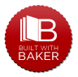

Замість корисної інфи.
Український літературний альманах "Колесо" ознайомить вас із творчістю українських прозаїків і поетів минулих століть, як відомих, так і майже забутих. У кожному випуску на вас чекатимуть вірші і оповідання, поеми і повісті... Сумні і веселі, серйозні і жартівливі - всі вони так чи інакше змальовують життя українського народу тих часів. Література - це один із засобів побачити минуле очами його сучасників, зрозуміти характер людей, їх потреби і мрії, їх почуття та сподівання; відчути зв'язок між собою і тими людьми, що жили століття тому.
...Колесо часу обертається і просуває нас вперед у часовому вимирі. Альманах української літератури "Колесо" допоможе звернутися до минулого, щоб відчути себе частиною народу, свою причетність до його історії.
